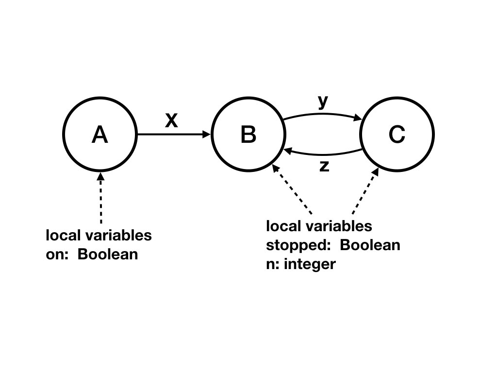

A logical clock algorithm is one in which each agent assigns a
number \(t(e)\), called
a timestamp, to each event \(e\) in its trajectory.
The timestamp of an event is
called the value of the logical clock, or the logical time, at the event.
The specification of the algorithm is as follows.
For all
\(t\), with past events defined as events with timestamps of \(t\) or
less, the cut \([past, future]\) must be consistent.
Examples of Consistent Cut based on
Timestamps
The figure below shows a set of timestamps in a timeline diagram with
agents \(A, B, D\), and with one channel from each agent to every
other agent. Timestamps are shown as integers inside the circles
representing events. Initial events have timestamps of 0. The next
event on agent \(A\) is an internal event, and its timestamp can be
any value greater than 0; the diagram shows a timestamp of 1. This
event sends a message and the message also has the same timestamp of
1.
The first (non-initial) event on agent \(D\) occurs when it receives a
message with timestamp 1. So, the timestamp for this event must be
greater than 1 and greater than 0 (the preceding event on the
agent). In the diagram the timestamp is set to 2.
Fig. 1: Consistent Cut based on Timestamps
The diagram shows a cut in which the past consists of events
with timestamps at most 2. Because all edges are directed from lower-
to higher-numbered timestamps, all edges from the future (events with timestamps
greater than 2) are directed towards events in the future. And do the
cut is consistent.
From the specification it follows that for all edges \((e, e')\) in
the timeline diagram:
\(t(e') > t(e)\).
The algorithm follows directly from this requirement.
Algorithm
Timestamps of messages: An agent assigns a timestamp of
\(t(e)\) to all messages that it sends in event \(e\).
The timestamp of an initial event is arbitrary.
For any event \(e'\) on an agent, let \(e\) be the event
that immediately precedes \(e\) on that agent.
For an internal event \(e'\) (i.e. an event in which no message is
received), set \(t(e')\) to any value greater than \(t(e)\).
For an event \(e'\) in which message with timestamp \(T\) is
received, set \(t(e')\) to any value greater than
\(\textrm{max}(t(e), T)\).
Using Logical Clocks to Determine Global
Snapshots
The state of an agent is its state between past and future. Likewise,
the state of a channel is the sequence of messages sent in the past
and received in the future. So, the global snapshot for any \(T\) can
be obtained in the following way:
Each agent records its state after an event with timestamp at most
\(T\) and before an event with timestamp greater than \(T\).
An agent starts recording the state of an incoming channel when the
agent assigns a timestamp greater than \(T\) to an event. It stops
the recording when it receives a message on the channel where the
message has timestamp greater than \(T\), and does
not include this message in the recording. So, the
state of the channel is recorded as the sequence of messages sent in
the past (i.e., messages with timestamps less than or equal to
\(T\)) that are received in the future (i.e. events with timestamps
greater than \(T\)).
Example of a Global Snapshot using Timestamps
The figure shows the global snapshot in which past events are those with
snapshots at most 2. The state of agent \(A\), is its state after its
event with timestamp 1 and before
its event with timestamp 3.
The state of agent \(B\) is its state after its event with timestamp 2 and before
its event with timestamp 4.
The state of agent \(D\) is its state after its event with timestamp 2 and before
its event with timestamp 3.
Agent \(A\) records the state of its incoming channel from \(B\) as
the sequence of messages with timestamps at most 2 that it receives in
its events with timestamps greater than 2. \(A\) stops recording the
state of this channel when it receives a message on the channel with
timestamp greater than 2. The diagram doesn't have any message from
\(B\) to \(A\) with timestamp greater than 2; so, in this diagram
\(A\) is continuing to record the state of this channel at the end of
this trajectory.
Vector Clocks
The logical clock algorithm ensures that if there is a path from an
event \(e\) to an event \(e'\) in the timeline diagram then \(t(e') >
t(e)\); however, the converse isn't necessarily true. The vector clock
algorithm ensures that \(t(e') > t(e)\) if and only if there is
a path from \(e\) to \(e'\).
A vector timestamp is a vector with an element for each agent in the
system, and for vectors \(v, v'\): \(v \geq v'\) if and only if
\(v_{i} \geq v'_{i}\), for all \(i\).
The algorithm is the same as for logical clocks except that
timestamps are vectors.
Let there be \(N\) agents in the system indexed \(0 \leq j <
N\). Let \(I_{j}\) be unit vector in direction \(j\), a vector of
zeroes except that \(I_{j}[j] = 1\). A timestamp for an event \(e'\)
on agent \(j\) is computed in the following way. Initial timestamps
are zero vectors.
For an internal event: \(t(e') = t(e) + I_{j}\)
For an event in which a message with timestamp \(T\) is received:
\(t(e') = max(t(e), t(M)) + I_{j}\)
Example of Vector Clocks

Fig. 2: Example of Vector Clocks
The figure shows both scalar and vector timestamps. Scalar
timestamps are shown inside the circles representing events while
vector timestamps are shown just outside the circles.
For example, there is a path from the event with timestamp \([1, 0,
1]\) to the event with timestamp \([2, 0, 1]\) whereas there is no
path between events with timestamps \([2, 0, 1]\) and \([1, 1, 2]\).
Proof of Correctness of Vector Clocks
We will prove that for all events \(e, e'\) if \(t'(e) \leq t(e)\)
then there is a path from \(e'\) to
\(e\). (If \(t'(e) = t(e)\) then \(e' = e\) and there is a
zero-length path from \(e\) to itself.)
The proof is based on the following observations that are easily
proved.
For all events \(e\) and all agents \(j\): There exists a path to
\(e\) from the \(i\)-th event on agent \(j\) for all \(i \leq
t(e)_{j}\).
If \(e\) is at agent \(j\) then \(e\) is the
\(t(e)_{j}\)-th event on agent \(j\).
From observation 2, \(e'\) is the \(t(e')_{j}\)-th on an agent \(j\).
From observation 1, there is a path to \(e\) from the \(i\)-th event on
agent \(j\) for \(i \leq t(e)_{j}\).
So, there is a path from \(e'\) to \(e\) because \(t(e')_{j} \leq t(e)_{j}\).
Example of Proof Steps
As an example of observation 1, consider the 5-th event in figure 2; this event has
timestamp \([3, 1, 1]\).
There are paths to this event from the zeroth, first, second, and third
events on agent 0, and from the zero-th and first events on agent
\(1\), and from the zero-th and first
events on agent \(2\).
As an example of observation 2, the event with timestamp \([1, 1, 2]\)
is the second event on agent \(2\).
Logical Time and Causality
Lamport proposed logical clocks originally so that if an event \(e\)
could have an impact on an event \(e'\) --- if there is a path from
\(e\) to \(e'\) in the timeline diagram --- then \(t(e') > t(e)\). We
will use logical time for its relevance to timeline diagrams,
causality and global snapshots.